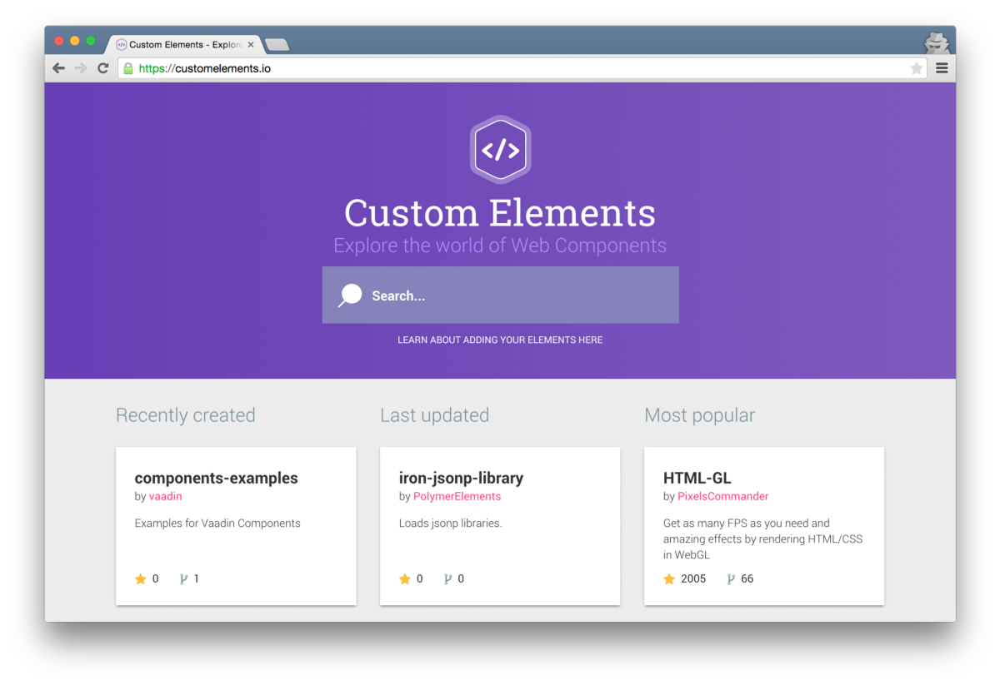

WEB COMPONENTS
Daniel Gimenes
Gabriel Coradelli
Letícia Giolli
Mateus Grigatti
Patricia Pereira
Gabriel Coradelli
Letícia Giolli
Mateus Grigatti
Patricia Pereira
Ferramentas VS Plataforma
Web Components?
W3C
Custom elements
HTML Imports
Templates
Shadow DOM
Browser support
| Chrome | Opera | Firefox | Safari | IE/Edge | |
Quem usa?
Material design
Eu quero!
Onde encontrar?
Polymer
https://elements.polymer-project.org
CustomElements.io
Como usar?
Bower.io
1. Instalar
$ bower i paper-tabs -S2. Importar
<head>
<link rel="import" href="bower_components/paper-dialog/paper-dialog.html">
</head>
3. Usar
<paper-tabs selected="0" class="bottom">
<paper-tab>Aba 1</paper-tab>
<paper-tab>Aba 2</paper-tab>
<paper-tab>Aba 3</paper-tab>
<paper-tab>Aba 4</paper-tab>
</paper-tabs>